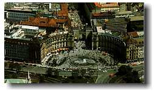
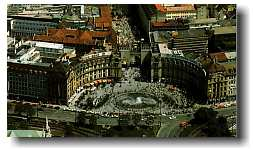
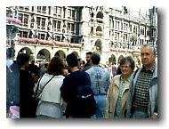
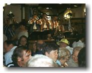
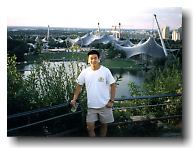
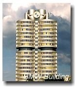
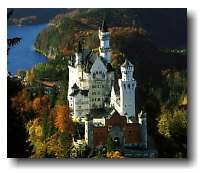
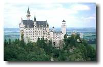

Munich, Germany

|
Munich, Germany  |
|
Trip #9: Saturday August 21 – Sunday August 22, 1999 Travelling on Germany’s ICE train is travelling in style. Capable of 280km/h (although I’ve never seen it go that fast), with these trains, you get all the perks: nice seats, comfortable ride, and food service. When I’m using my eurail pass, I might as well reach for the sky. So, ICE train it was, from Hannover to Munich on my own for a weekend trip. Munich was packed with people. I had to use some of my nifty hockey moves to avoid bumping into people in the central squares (i.e. Karlsplatz and Marienplatz). Just as busy was Munich’s world-famous beer hall. I went into the most famous one called Hofbrauhaus. Obviously, there’s no time preference when it comes to drinking in Munich. Even at noon, the place was Rockin’; a live band was playing with full force and everyone was downing their Mass (1L beer). For the first time in Europe, I went to a non-artsy museum. Called Deutsches Museum, it’s a museum of science and technology. Apparently the world’s largest and best of its kind. This place was bigger than big. There was no way I was going to cover it all. 3 hours and I was exhausted. I had to leave. I met a girl from Squamish named Alena. She’s travelling by herself and is on the 8th month of her 12 months trip. She’s pretty much been everywhere already, so now she’s taking it easy. A couple weeks here and a couple there. Sometimes she wastes days doing nothing. But she’s still having fun. I invited Alena to go check out the 1972 Olympic site. Really really cool place. The whole scenery is different from downtown Munich. A lot more green with many modern looking buildings. Nearby was a mountain/hill that we climbed. On one side, we got a view of the Olympic site and on the other, downtown Munich. On Sunday, I went on the hunt for Europe’s most famous medieval castle, Schloss Neuschwanstein. Disneyland’s castle is based on this one. Finding this castle shouldn’t be a problem for anyone. Get off at the right train station and just look around. You’ll see a bunch of people moving in sync like a group of sheeps. Just pretend you’re one of them and follow along. The magnitude of people that go to see this castle is unbelievable. After a 15 min. hike, I arrived at the first of many loooong lineups. This one was for the tour ticket (a tour is the only way to see the inside). After I got my ticket, I went to the next lineup. Here, I was able to choose the language of my choice. And there were many. Languages for everyone, save dogs. So unfortunately, this one dog had to settle with English and come on my tour, but I’m sure everyone else got the language of their choice. My lineup finally entered the castle, but just as things were progressing, we had to stop and wait again. Now I know why they say you should give yourself 8 hours from the time you leave Munich to the time you return. It’s because of all the waiting. But the castle was worth the wait. It was really beautiful. This castle is actually worth seeing, unlike many others I’ve seen. But the tour guide was as energetic as anyone who’s given ten’s of tours already that day. And the tour was kept short so that they can quickly get us out of there and get the next groups in. |
|
|
 johnnyo@canada.com
johnnyo@canada.com